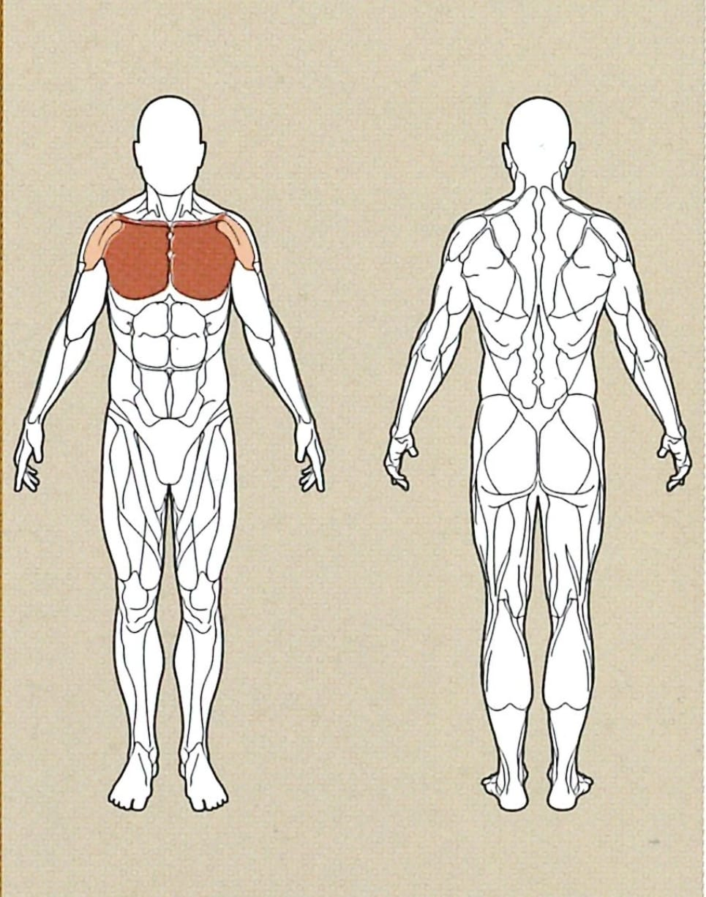

Brustpresse

Ausgangsposition
● Verstelle die Sitzhöhe so weit, dass du die Griffe auf deiner Brusthöhe vertikal/horizontal greifen kannst.
● Setze dich nun an die Maschine, drücke das Fusspedal nach unten und greife nach den Griffen.
● Lasse das Fusspedal vorsichtig wieder nach unten, und stabilisiere die Griffe mit deiner
Körperspannung
● In der Grafik wird nach oben gedrückt, an unserer Maschine drückst du das Gewicht nach vorne, du
kannst
dir jedoch vorstellen, dass du das Gewicht nach oben drückst, um deinen Brustmuskel noch besser an zu
steuern.
Ausführung
Drücke beide Griffe nun parallel zueinander von dir weg, indem dass du deine Arme nach vorne ausstreckst.
Rückführung
Bringe nun die Griffe, in einer gleichmäßigen Bewegung wieder zurück zu deinem Körper, achte darauf,
dass sich deine Arme gleich schnell bewegen.
Lege das Gewicht nicht ab, sondern halte die Spannung in der Brust und fahre mit einer weiteren
Wiederholung fort.
Varianten
○ obere Brust
■ stelle die Höhe des Kabelzugs auf Hüfthöhe ein
○ Mittlere Brust
■ stelle die Höhe des Kabelzugs auf beiden Seiten auf Brusthöhe ein
○ untere Brust
■ Stelle die Höhe des Kabelzugs auf Kopfhöhe ein